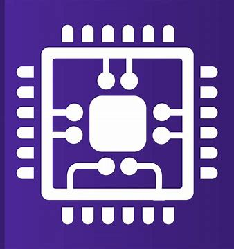
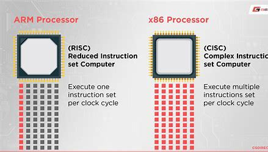

welcome in this unit we will discover the types of processing units and let's
start by the central processing unit or the CPU.
component of cpu and performance
cpu component
The central processing unit (CPU) is fabricated from silicon, which houses numerous transistors.
Within the CPU, there are distinct groups known as cores, each operating at a specific frequency.
the roles of the CPUs:
The central processing unit (CPU) is responsible for executing instructions, managing input and output
operations, and performing arithmetic and logical operations using the Arithmetic Logic Unit (ALU).
Additionally, it includes a control unit and registers to store intermediate data.
Furthermore, the CPU features a cache for efficiently storing frequently accessed data.
cpu evolution
Central Processing Units (CPUs) have undergone significant architectural changes over time.
Initially, they followed the Harvard architecture, which featured separate memory for instructions and data.
Later, the Von Neumann architecture emerged, integrating instruction and data memory.
Finally, microprocessors became prevalent, combining both functions into a single chip.

cpu ISA
ISA (Instruction Set Architecture) is the way that cpu work and excute the programs launched by the user.
RISC (Reduced Instruction Set Computer) is an ISA that excute simple and minimalistic code and
CISC (Complex Instruction Set Computer) is an ISA that excute complex code and programs.
RISC is used mostly for mobile and embedded devices.
CISC is used mostly in data centers ,super computers and personal computers.

microprocessor companies
In recent years, several companies have been prominent in the CPU market. Intel produces Core i5 and i7 processors for
consumers and Xeon CPUs for servers. AMD offers Ryzen processors for consumers and Threadripper and EPYC CPUs for servers.
Both companies utilize the x86 architecture, originally developed by Intel, which employs a CISC (Complex Instruction Set Computing) ISA.
IBM previously manufactured CPUs known as PowerPC. However, they have since shifted focus to quantum computing and AI.
Qualcomm and MediaTek design processors based on the ARM architecture, which is developed by ARM Holdings. This architecture uses a RISC
(Reduced Instruction Set Computing) ISA and is predominantly used in modern smartphones and select laptops.
Apple designs its own SoCs (System on Chips), which integrate the CPU, GPU, NPU, memory, and other components into a single chip.
It’s important to note that Qualcomm and Apple design their chips but do not manufacture them. The actual production is carried out
by semiconductor fabrication plants (fabs) such as TSMC, Intel, Samsung, and SMIC, which produce the CPUs used in our devices.